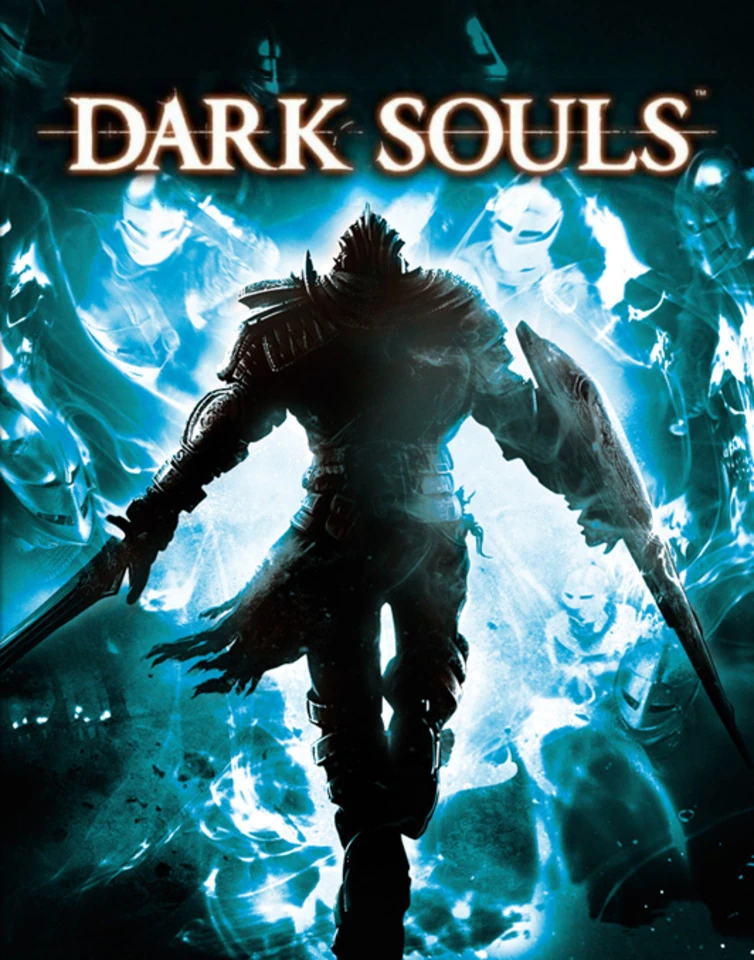

Dark Souls es una serie de juegos de rol de acción creada por Hidetaka Miyazaki de FromSoftware y publicada por Bandai Namco Entertainment. La serie comenzó con el lanzamiento de Dark Souls en 2011 y ha visto dos secuelas, Dark Souls II en 2014 y Dark Souls III en 2016. Dark Souls ha recibido aclamación crítica, con el primer título a menudo citado como uno de los mejores videojuegos de todos los tiempos, y la serie en su conjunto ha sido tanto elogiada como criticada por su alto nivel de dificultad. Para 2022, la serie había enviado más de 33 millones de copias. Otros juegos de FromSoftware, incluyendo Demon's Souls, Bloodborne, Sekiro: Shadows Die Twice y Elden Ring, comparten varios conceptos relacionados y a menudo se agrupan juntos como «Soulsborn».
Dark Souls es el primer juego de la serie; se considera un sucesor espiritual de Demon's Souls (2009). FromSoftware quería desarrollar una secuela de Demon's Souls, pero la propiedad intelectual pertenecía a Sony y no les permitía hacerlo en otras plataformas. Fue lanzado en 2011 para PlayStation 3 y Xbox 360. En 2012, se lanzó Dark Souls: Prepare to Die Edition para Windows, PlayStation 3 y Xbox 360, que incluía el juego base y el contenido descargable Artorias of the Abyss. El juego tiene lugar en el reino ficticio de Lordran. Los jugadores asumen el papel de un personaje humano maldito que se propone descubrir el destino de los humanos no muertos como ellos. La trama de Dark Souls se cuenta principalmente a través de detalles ambientales, texto de sabor de los objetos del juego y diálogos con personajes no jugables (PNJ). Los jugadores deben reunir pistas para entender la historia, en lugar de que se les cuente a través de medios más tradicionales, como las escenas cinemáticas. Dark Souls y su predecesor Demon's Souls recibieron reconocimiento debido al alto nivel de dificultad de la serie. Una versión con algunas mejoras gráficas y de jugabilidad, Dark Souls: Remastered, se lanzó en mayo de 2018.
A diferencia de los dos juegos anteriores, el director Hidetaka Miyazaki no repitió su papel ya que estaba ocupado dirigiendo Bloodborne, aunque aún estaba involucrado en la supervisión. Fue lanzado en 2014 para Windows, PlayStation 3 y Xbox 360. En 2015, se lanzó una versión actualizada que presentaba el contenido descargable The Lost Crowns para Windows, PlayStation 3, Xbox 360, PlayStation 4 y Xbox One, bajo el título de Dark Souls II: Scholar of the First Sin, con los dos últimos plataformas recibiendo lanzamientos físicos. El juego tiene lugar en el reino de Drangleic, donde el jugador debe encontrar una cura para la maldición de los no muertos. Aunque ambientado en el mismo universo que el juego anterior, no hay una conexión directa en la historia con Dark Souls

Dark Souls III fue lanzado en 2016 para Windows, PlayStation 4 y Xbox One. El juego tiene un ritmo más rápido que las entregas anteriores de Souls, lo que se atribuyó en parte al estilo de juego de Bloodborne. La trama se desarrolla en el reino de Lothric, donde el jugador debe poner fin al ciclo de vinculación de la Llama. En 2017, se lanzó la versión completa que contiene el juego base y ambas expansiones (Ashes of Ariandel y The Ringed City), bajo el título Dark Souls III: The Fire Fades Edition. Dark Souls III fue un éxito tanto crítico como comercial, y los críticos lo calificaron como una conclusión digna y adecuada para la serie. Vendió más de 10 millones de copias para el año 2020, convirtiéndose en el juego de venta más rápida en la historia de Bandai Namco en ese momento (hasta que fue superado por Elden Ring). En 2015, Miyazaki dijo que Dark Souls III probablemente sería el último de la serie, y que FromSoftware elegiría crear nuevos juegos de propiedades intelectuales no relacionadas en el futuro.

Hidetaka Miyazaki (宮崎英高 Miyazaki Hidetaka, nacido en Shizuoka, Prefectura de Shizuoka, Japón) es un diseñador de videojuegos japonés y actual presidente de la compañía de videojuegos From Software. Miyazaki empezó a trabajar en From Software como programador en el 2004, y después de trabajar en la saga Armored Core, se hizo conocido por crear la franquicia Souls. Aunque Miyazaki ha dirigido los dos primeros videojuegos de la serie, decidió tomar un papel menos activo en el desarrollo de Dark Souls II, supervisando el proyecto mientras Tomohiro Shibuya y Yui Tanimura se encargaron de la co-dirección.